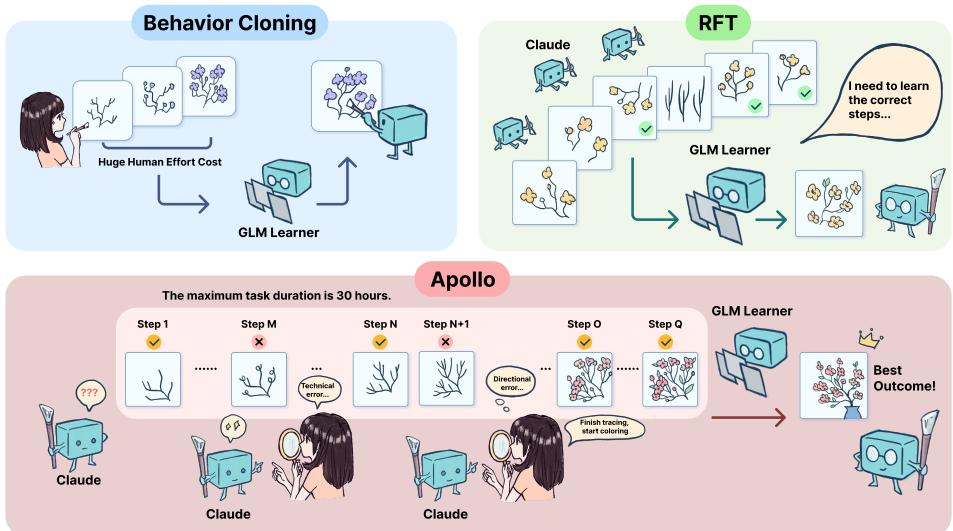
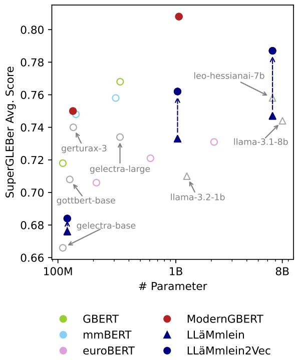

📝 微观深度解读
2025-11-04
为您精选了 6 篇高质量 AI 论文的深度解读
推荐分数: 0.554
[WARNING] 已回退至原始摘要/解读：
📖 简介：现代大型语言模型（LLMs）主要通过显式文本生成（如思维链（CoT））进行“思考”，将推理推迟到训练后，并未充分利用预训练数据。我们提出并开源了Ouro，命名源自递归的乌洛波罗斯，这是一类预训练的循环语言模型（LoopLM），它通过以下方式将推理融入预训练阶段：（i）在潜在空间中的迭代计算，（ii）用于学习深度分配的熵正则化目标，以及（iii）扩展到7.7万亿个标记。Ouro 1.4B和2.6B模型在广泛的基准测试中表现优越，性能与高达12B的最先进大型语言模型（SOTA LLMs）相匹配。 （enrich failed, fallback to abstract）
📖 简介：现代大型语言模型（LLMs）主要通过显式文本生成（如思维链（CoT））进行“思考”，将推理推迟到训练后，并未充分利用预训练数据。我们提出并开源了Ouro，命名源自递归的乌洛波罗斯，这是一类预训练的循环语言模型（LoopLM），它通过以下方式将推理融入预训练阶段：（i）在潜在空间中的迭代计算，（ii）用于学习深度分配的熵正则化目标，以及（iii）扩展到7.7万亿个标记。Ouro 1.4B和2.6B模型在广泛的基准测试中表现优越，性能与高达12B的最先进大型语言模型（SOTA LLMs）相匹配。 （enrich failed, fallback to abstract）

推荐分数: 0.494
[WARNING] 已回退至原始摘要/解读：
📖 简介：大型语言模型（LLM）代理最近在自动编码、深度研究和图形用户界面操作等领域展现出强大的潜力。然而，训练它们在长时间跨度、领域专门化任务上取得成功仍然具有挑战性。目前的方法主要分为两类。 （enrich failed, fallback to abstract）
📖 简介：大型语言模型（LLM）代理最近在自动编码、深度研究和图形用户界面操作等领域展现出强大的潜力。然而，训练它们在长时间跨度、领域专门化任务上取得成功仍然具有挑战性。目前的方法主要分为两类。 （enrich failed, fallback to abstract）

查看详细解读 →
3. New Encoders for German Trained from Scratch: Comparing ModernGBERT with Converted LLM2Vec Models
推荐分数: 0.470
[WARNING] 已回退至原始摘要/解读：
📖 简介：尽管解码器仅的语言模型（LLMs）逐渐兴起，编码器在高效的德语自然语言处理（NLP）和自然语言理解（NLU）场景中仍然至关重要。本研究在相同的数据和训练条件下探讨了高质量德语编码器的两种途径：1）从头开始训练，2）通过LLM2Vec转换解码器。我们引入了两个资源：ModernGBERT（134M, 1B），完全透明的德语编码器，采用ModernBERT风格，以及LL\"aMmleinVec（120M, 1B, 7B），通过掩码下一个标记预测训练的解码器到编码器转换，均扩展到8,192个标记的上下文。 在SuperGLEBer上，ModernGBERT 1B创造了新的最佳表现（平均0.808），超越了GBERT Large（+4%）和七倍大的转换7B模型（0.787）。 （enrich failed, fallback to abstract）
📖 简介：尽管解码器仅的语言模型（LLMs）逐渐兴起，编码器在高效的德语自然语言处理（NLP）和自然语言理解（NLU）场景中仍然至关重要。本研究在相同的数据和训练条件下探讨了高质量德语编码器的两种途径：1）从头开始训练，2）通过LLM2Vec转换解码器。我们引入了两个资源：ModernGBERT（134M, 1B），完全透明的德语编码器，采用ModernBERT风格，以及LL\"aMmleinVec（120M, 1B, 7B），通过掩码下一个标记预测训练的解码器到编码器转换，均扩展到8,192个标记的上下文。 在SuperGLEBer上，ModernGBERT 1B创造了新的最佳表现（平均0.808），超越了GBERT Large（+4%）和七倍大的转换7B模型（0.787）。 （enrich failed, fallback to abstract）

查看详细解读 →
推荐分数: 0.461
📖 简介：本文提出了一种新颖的多样性感知策略优化方法R1-zero-Div，旨在提升大语言模型（LLM）在强化学习（RL）训练中的推理能力。通过设计基于熵的token级别多样性度量并选择性应用于正样本，研究表明解决方案多样性与模型推理潜力之间存在强正相关，最终在多个数学推理基准上实现了3.5%的性能提升。

推荐分数: 0.460
📖 简介：本文提出了一种基于设计契约（DbC）的方法，通过引入合同层来解决大型语言模型（LLMs）在生成输出时缺乏可验证保证的问题。该合同层定义了输入输出的语义和类型要求，并通过概率修复确保生成内容符合这些要求，从而增强了LLMs的可靠性和一致性。

推荐分数: 0.409
📖 简介：本文提出了一种新颖的多智能体强化微调框架（MARFT），旨在解决大型语言模型（LLM）在多智能体系统中的应用挑战。通过引入灵活马尔可夫博弈（Flex-MG）和序列决策重构，MARFT显著提升了智能体在动态环境中的协作能力和任务解决性能。实验结果表明，MARFT在复杂推理任务中优于传统单智能体方法，推动了LLM在多智能体系统中的有效应用。